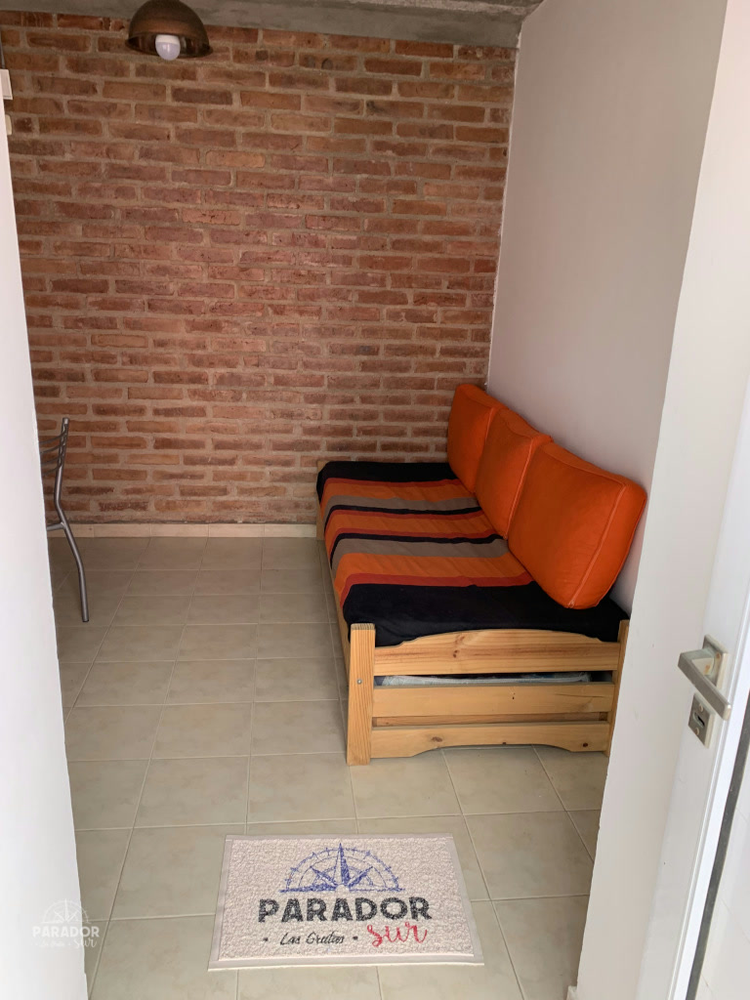

01 / AL FRENTE
Monoambiente
Un espacio práctico y cómodo para compartir tus días de playa.
32 m²superficie2 a 4personas
Comodidades
- Smart TV Samsung de 32″ · canales digitales · plataformas
- Aire acondicionado
- Heladera y microondas
- WiFi por fibra
- Parrilla individual
- Espacio para vehículo
- Ropa de cama
- Alarma